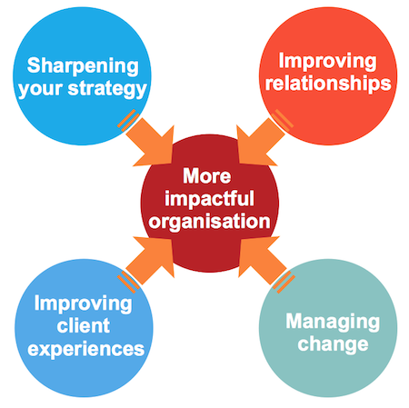

My approach is bespoke to the needs and values of your organisation and is based on my extensive experience as a strategist and change project manager.

Sharpening your strategy
In budget-constrained times it is critical to remain relevant to your clients and funders and to grasp opportunities. It can, however, be hard to know where to focus your scarce resources to achieve maximum impact.
Via a structured approach and using my extensive experience as a strategist, I will help you to see clarity and to decide where to focus to best meet the expectations of your clients and funders:
- For social enterprises and charities in the start-up phase, I can help you to develop your strategy using a structured and flexible approach.
- For established organisations, I can support you with a strategy review or guide you in planning and executing a strategy refresh.
XXXI’ve worked with Catherine for over 5 years […] Catherine combines a strategic mindset with a highly structured and analytical approach. This makes her a very valuable asset in developing as well as reviewing strategies and new ideas. She’s acted as a great sounding board for some of my own thinking and can usually be counted on to offer new and valuable insights.XXX, Ewan Mearns, Senior Manager, Strategy & Sectors at Scottish Enterprise
Delivering outstanding customer experiences
Customer service experience has become the main differentiator from the competition. Clients have increasingly high expectations, and share their experiences – positive or negative – on social media.
I started my career as a User Experience Designer and I’m still passionate about designing great client experiences. I can help you to look at the customer experience through the eyes of your clients. You will discover a totally new perspective. I will provide you with easy-to-remember guidelines tailored to your organisation and support you to design outstanding client experiences. I will help you to draw up a practical action plan.
Feedback from participants at a recent customer service workshop: “The workshop made you think about refreshing everything! I look at everything differently although I am 100% customer focused”
“It made me think about the client’s perspective and how things look from the other side”
“It helped me focus on what we do well and what could be improved collectively”
“Everyone was motivated and a doable collective action plan to work towards was created”
“I was able to list individual changes. I will implement them on Monday”
Managing change with stakeholder buy-in
Shifts in society, technology or funding sources can force you to consider radical changes in your organisation’s focus or operation – sometimes with the risk of diluting your purpose and values. But implementing organisational change often fails because of lack of buy-in from stakeholders or insufficient time devoted to surfacing the range of issues and perspectives.
I can help you design and manage change which stakeholders will support, while remaining true to your values. I have extensive experience in designing effective consultation approaches and will assist you to develop an effective and pragmatic approach for getting buy-in from your stakeholders, internal or external. I can also facilitate strategic change workshops for Board members or staff. Finally, as an experienced project manager I can support you to develop a plan for implementing successful change.
“We have just conducted a review of our entire undergraduate programme. Catherine provided very sound advice which has helped us immeasurably. She was especially insightful in helping us to structure our Away Day, so that we were able to run a day where everyone felt involved and consulted. Thanks for your help, Catherine”, Dr. Karen Renaud, Computer Scientist & Senior Lecturer at the University of Glasgow
Building more effective working relationships
The need for change can cause major differences in views and values to surface and stress-test working relationships. My expertise and experience as a mediator enable me to quickly gain insight into the dynamics between people with different perspectives. I will help you to (re)establish common purpose, get Board members, staff and partners behind shared interests and develop win-win approaches.